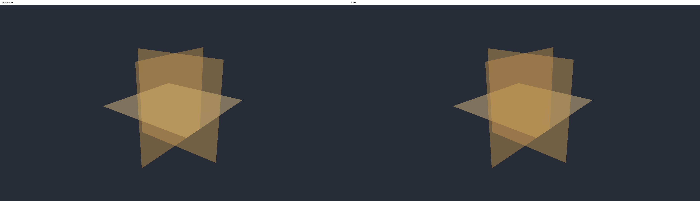
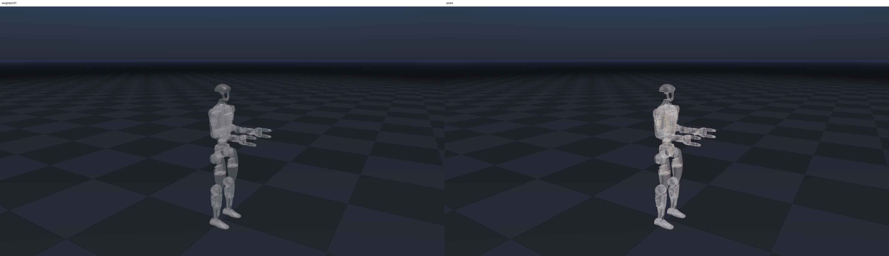
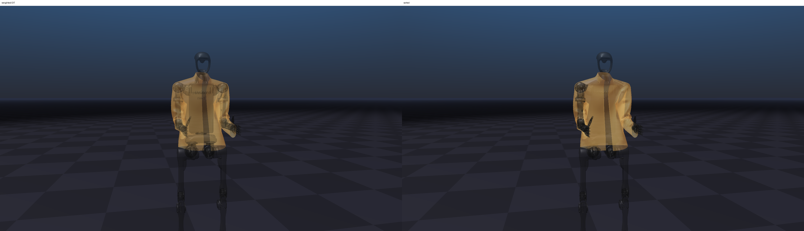

{kind=link}

tri_surface_96
55,296 transparent cloth triangles in crossing surfaces with uniform opacity.
1080p comparison of sorted back-to-front blending and weighted order-independent transparency for transparent rigid meshes, triangle surfaces, and cloth.
tri_surface_96.
g1_multibody_1.
cloth_h1 scene.
Sorted blending: renders transparent meshes after opaque geometry in back-to-front order, so standard alpha blending composes farther surfaces before nearer ones.
Weighted OIT: OIT stands for order-independent transparency; this path accumulates transparent fragments with opacity/depth weights, so the result does not depend on object draw order but is approximate.
| Scene | Mode | Mean ms | Median ms | Min ms | Max ms |
|---|---|---|---|---|---|
tri_surface_96 |
sorted | 11.513 | 11.098 | 10.404 | 17.403 |
tri_surface_96 |
weighted OIT | 11.235 | 10.956 | 9.956 | 17.506 |
g1_multibody_1 |
sorted | 6.721 | 6.596 | 5.896 | 8.418 |
g1_multibody_1 |
weighted OIT | 6.219 | 6.183 | 5.435 | 7.793 |
cloth_h1 |
sorted | 22.368 | 21.971 | 20.494 | 27.553 |
cloth_h1 |
weighted OIT | 23.543 | 23.010 | 20.674 | 28.343 |

tri_surface_9655,296 transparent cloth triangles in crossing surfaces with uniform opacity.

g1_multibody_154 shapes from the Unitree G1 multibody asset with non-plane shapes at 0.45 opacity.

cloth_h1H1 jacket cloth scene with transparent cloth triangles and transparent robot shapes.
| Scene | Description |
|---|---|
tri_surface_96 |
55,296 transparent cloth triangles in crossing surfaces with uniform opacity. |
g1_multibody_1 |
54 shapes from the Unitree G1 multibody asset; non-plane shapes use opacity 0.45. |
cloth_h1 |
H1 jacket cloth reference scene with 66,930 transparent cloth triangles and 99 transparent robot/ground shapes. |
Generated from results.json and 1080p PNG captures.
Times are per rendered ViewerGL frame after warmup. Comparison images place weighted OIT on
the left and sorted blending on the right.
{kind=link}
{kind=link}